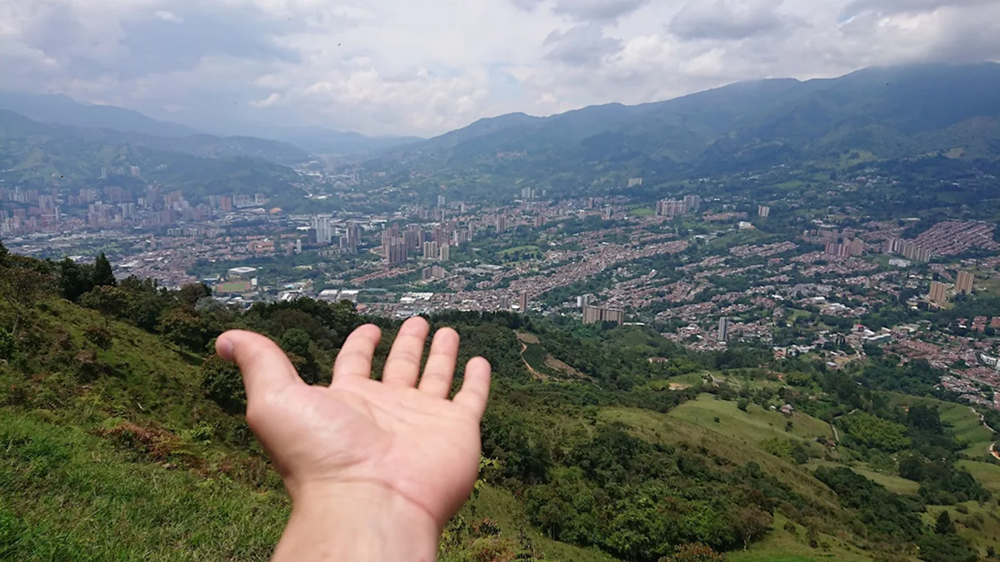

Montañas
Cerro Manzanillo
El Cerro Manzanillo está ubicado en el corregimiento de Manzanillo, perteneciente al municipio de Itagüí, en Antioquia, Colombia. Se encuentra cerca de la vereda El Pedregal y limita al norte con los corregimientos de San Antonio de Prado y Altavista (Medellín), al oriente con Medellín y Envigado, al sur con la cabecera de Itagüí y al occidente con La Estrella.
La Montaña que Piensa

La Montaña Que Piensa está ubicada en la vereda El Pedregal, en Itagüí, Antioquia. Es un restaurante mirador, museo a cielo abierto y lugar de arte, abierto todos los días hasta la medianoche.
Mapa de Centros Deportivos
 Juan Pérez
Juan Pérez
Es un excelente lugar para hacer caminatas, es larga en pendientes pero satisfactoria, se logra ver todo el valle del aburra, desde Bello hasta la Estrella. Caminando desde el parque de las chimeneas en Itagüí son más o menos 3 horas, vale la pena. En la bajada se pueden bajar en un integrado del metro.
 María Gómez
María Gómez
Es un lugar frío, Ahora no es un lugar para visitar, es relativamente peligroso subir hasta este lugar, Pues los delincuentes merodean por estas áreas, desafortunadamente no se cuenta con la protección ideal para caminar, pero es un lugar maravilloso desde el que se divisa todo el valle de aburra
 Carlos Ríos
Carlos Ríos
El pico Manzanillo es hermoso las vistas son hermosas todo es muy agradable es muy natural y se ve todo
Juan Pérez
Fatal, la experiencia deja mucho que desear. No es para nada calidad precio, esos platos con precios muy altos y encima son simples nisiquiera ricos de echo nos dieron muchos trozos quemados no se veían rojos oscuros eran trozos negros y duros. El servicio muy lento, eran como 2 o 3 personas atendiendo más de 20 mesas, pedimos salsas y nunca las trajeron, pedimos limón y tampoco y la cuenta se tardó como 10 minutos.
María Gómez
El lugar es hermoso, la atención el servicio la comida el ambiente todo es espectacular
Carlos Ríos
Muy buen lugar para ir a relajarse y distraerse, es recomendable ir en horas del dia ya que el acceso es un poco complicado y estrecho, sin embargo, la comida es deliciosa y aunque hubo algunas complicaciones en cuanto a la entrega de la comida (entregaron 1 plato cada 10 minutos) fue una buena experiencia, con buena música y entretenimiento, un lugar recomendado para ir con familia y amigos a pasar un almuerzo/cena muy agradable.